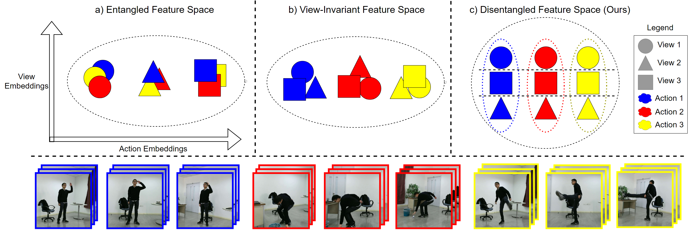

Paper Details
Method Diagram
First, our spatio-temporal encoder extracts global features from a video. A transformer decoder is used to separately extract action and view features with the help of learnable action and view queries. In addition to the classification loss to predict the action and view, we also introduce contrastive loss to learn disentangled view and action representations.
Disentangled Representation Learning
Conceptual visualization of learned action and view features plotted on the x- and y-axes, respectively, from different learning objectives. a) Traditional feature learning for multi-view action recognition may lead to view features becoming entangled in the action embedding space, causing different action classes to erroneously cluster due to similar viewpoints. b) View-invariant action features will properly cluster by action class, but the disentangled view features do not cluster properly. c) Our method disentangles the view features from the action features while still retaining the structure of both embedding spaces, improving performance on unseen viewpoints.
Results

Results on four benchmark multi-view action recognition models. DVANet outperforms all uni-modal models, including both RGB- and skeleton-based multi-view action recognition works.
Below are qualitative results exhibiting the learned disentangled features of DVANet. Additional results are also provided to show how DVANet's learned embedding space aids in action recognition performance on unseen viewpoints when compared to previous works.

Conclusion
In this paper, we propose a novel transformer decoder-based architecture in tandem with two supervised contrastive losses for multiview action recognition. By disentangling the view-relevant features from action-relevant features, we enable our model to learn action features that are robust to change in viewpoints. We show through various ablations, analyses, and visualizations that changes in viewpoint impart perturbations on learned action features. Thus, disentangling these perturbations improves overall action recognition performance. Uni-modal state-of-the-art performance is attained on four large-scale multi-view action recognition datasets, highlighting the efficacy of our method.
For more technical details and results, check out our attached main paper.
BibTeX
@article{siddiqui2023dvanet,
title={DVANet: Disentangling View and Action Features for Multi-View Action Recognition},
author={Siddiqui, Nyle and Tirupattur, Praveen and Shah, Mubarak},
journal={AAAI},
year={2024}
}
}